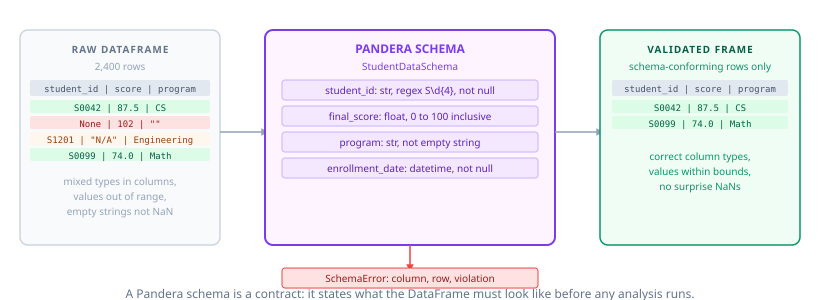

import numpy as np
import pandas as pd
import pandera as paChapter 26: Data schema validation with Pandera


The grade-predictor pipeline finishes training. Accuracy: 87%. You deploy it.
Three weeks later a data engineer flags something: 23 rows in university_analytics.csv have final_score = 999. The data entry system used 999 as a sentinel for “not recorded”. Nobody documented it. The model trained on those 23 rows as if 999 were a valid exam score. There was no error, no warning. The model just learned the wrong thing for 23 students.
The check you ran at load time called .dtypes and printed .head(). Neither caught a score of 999. Validation by inspection runs once, in a notebook cell, by whoever is at the keyboard. It is forgotten the next time the pipeline runs.
What you needed was a data contract: a formal specification of what the DataFrame must look like: column types, allowed value ranges, uniqueness constraints, that runs automatically every time data enters the pipeline and fails loudly with a precise error when violated. Pydantic gave you this for individual records at the system boundary. Pandera gives you this for whole DataFrames inside the pipeline.
Next: Chapter 27: Logging adds the audit trail that records which validation errors occurred and when, the permanent record that Pandera’s exceptions do not keep by themselves.

Pydantic validated the shape of a single record as it entered the system: one row, one pass or fail. A DataFrame is not a record. It is a table. The properties that matter at the table level are different: is student_id unique across all 2,400 rows? Is the distribution of program values consistent with what the source system should produce? Does final_score stay between 0 and 100 for every row, not just the one you checked manually?
These are questions Pydantic cannot answer, because Pydantic operates on one object at a time.
Pydantic BaseModel |
Pandera DataFrameSchema |
|
|---|---|---|
| Unit | One record (row) | Whole DataFrame |
| Checks | Type coercion, field constraints, cross-field | Column dtype, nullability, uniqueness, value ranges, statistical bounds |
| Returns | Validated model instance | Validated DataFrame |
| Error info | Field path + message | Row index + column + failed check |
| Best for | API inputs, config objects | CSVs, pipeline data, feature tables |
Key concept: a schema is documentation that runs
A Pandera schema is not a test you write once. It is a living specification: the schema says what the DataFrame must look like, and the pipeline is only allowed to proceed when the data keeps that promise. Every time the pipeline runs, the contract is checked. When the data changes in a way that violates it, you know immediately, with a row index, a column name, and the rule that failed.
The diagram below shows the contract in action: a raw DataFrame enters Pandera, the schema checks each column’s type, nullability, range, and uniqueness, and either returns a validated frame or raises a SchemaError with the exact row index and rule that failed.

1. Defining a DataFrameSchema
The functional API creates a schema by passing a dict of column names to pa.Column definitions. Each pa.Column declares the dtype and the checks it must satisfy.
Set coerce=True to let Pandera convert "78.5" to 78.5 before checking a float column. This mirrors Pydantic’s type coercion at the row level. The top-level checks list accepts table-level constraints such as uniqueness across the entire column.
schema = pa.DataFrameSchema(
{
"student_id": pa.Column(str, pa.Check.str_matches(r"^S\d{4}$")),
"midterm_score": pa.Column(float, [pa.Check.ge(0.0), pa.Check.le(100.0)]),
"final_score": pa.Column(float, [pa.Check.ge(0.0), pa.Check.le(100.0)]),
"project_score": pa.Column(float, [pa.Check.ge(0.0), pa.Check.le(100.0)]),
"program": pa.Column(str, pa.Check.isin(["CS", "EE", "Math", "Physics", "Biology"])),
"has_internet": pa.Column(bool),
"school_id": pa.Column(str, nullable=True),
"teacher_count": pa.Column(int, pa.Check.ge(1)),
"school_size": pa.Column(str, pa.Check.isin(["Small", "Medium", "Large"])),
"pass_threshold": pa.Column(float, pa.Check.between(50.0, 80.0), nullable=True),
},
checks=[
pa.Check(lambda df: df["student_id"].is_unique, error="student_id must be unique"),
],
coerce=True,
)
print("Schema created with", len(schema.columns), "columns")Schema created with 10 columnsBuild a small valid sample to test against:
sample_df = pd.DataFrame(
{
"student_id": ["S0001", "S0002", "S0003"],
"midterm_score": [78.5, 65.0, 90.0],
"final_score": [82.0, 70.0, 88.0],
"project_score": [91.0, 75.0, 85.0],
"program": ["CS", "EE", "Math"],
"has_internet": [True, False, True],
"school_id": ["SCH01", "SCH01", "SCH02"],
"teacher_count": [12, 8, 15],
"school_size": ["Large", "Medium", "Large"],
"pass_threshold": [60.0, 60.0, 65.0],
}
)
sample_df.head()| student_id | midterm_score | final_score | project_score | program | has_internet | school_id | teacher_count | school_size | pass_threshold | |
|---|---|---|---|---|---|---|---|---|---|---|
| 0 | S0001 | 78.5 | 82.0 | 91.0 | CS | True | SCH01 | 12 | Large | 60.0 |
| 1 | S0002 | 65.0 | 70.0 | 75.0 | EE | False | SCH01 | 8 | Medium | 60.0 |
| 2 | S0003 | 90.0 | 88.0 | 85.0 | Math | True | SCH02 | 15 | Large | 65.0 |
Call .validate() on a conforming DataFrame. It returns the validated frame unchanged:
validated = schema.validate(sample_df)
print("Validation passed:", validated.shape)Validation passed: (3, 10)Introduce a row with midterm_score = 150 and confirm Pandera raises SchemaError with the row index and the violated rule:
bad_df = sample_df.copy()
bad_df.loc[0, "midterm_score"] = 150.0
try:
schema.validate(bad_df)
except pa.errors.SchemaError as e:
print(type(e).__name__)
print(e)SchemaError
Column 'midterm_score' failed element-wise validator number 1: less_than_or_equal_to(100.0) failure cases: 150.0
Activity 1: duplicate student_id
Create a DataFrame where two rows share the same
Create a DataFrame where two rows share the same
student_id. Run schema.validate(df) and confirm it raises a SchemaError with a message about uniqueness.
dup_df = sample_df.copy() dup_df.loc[1, "student_id"] = "S0001" # duplicate schema.validate(dup_df) # should raise
2. DataFrameModel: the class-based API
The functional DataFrameSchema API is explicit but verbose. Pandera’s class-based API mirrors Pydantic’s BaseModel: columns become annotated class fields, and pa.Field carries the constraints.
from typing import Optional
import pandera as pa
from pandera.typing import SeriesDefine the schema as a class. The Config inner class sets options such as coerce. A @pa.check classmethod adds a column-level constraint that the built-in pa.Field arguments cannot express:
class StudentDataSchema(pa.DataFrameModel):
student_id: Series[str] = pa.Field(str_matches=r"^S\d{4}$")
midterm_score: Series[float] = pa.Field(ge=0.0, le=100.0)
final_score: Series[float] = pa.Field(ge=0.0, le=100.0)
project_score: Series[float] = pa.Field(ge=0.0, le=100.0)
program: Series[str] = pa.Field(isin=["CS", "EE", "Math", "Physics", "Biology"])
has_internet: Series[bool]
school_id: Series[str] | None = pa.Field(nullable=True)
teacher_count: Series[int] = pa.Field(ge=1)
school_size: Series[str] = pa.Field(isin=["Small", "Medium", "Large"])
class Config:
coerce = True
@pa.check("student_id")
def student_id_unique(cls, series: Series[str]) -> bool: # noqa: N805
return series.is_uniqueValidate by calling the class name directly. No schema object needed:
validated = StudentDataSchema.validate(sample_df)
print("Class-based validation passed:", validated.shape)Class-based validation passed: (3, 10)The @pa.check decorator attaches a column-level check as a classmethod. The check receives the entire Series and must return a boolean (or a boolean Series for element-wise checks).
Pro Tip: Use DataFrameModel for reuse, DataFrameSchema for quick scripts
DataFrameModel is easier to subclass, document, and test: it reads like a dataclass and fits naturally alongside Pydantic models. DataFrameSchema is useful when you want to build a schema programmatically at runtime, e.g., from a config file or database metadata.
Activity 2: extend the Schema
Subclass
Subclass
StudentDataSchema and add a semester column constrained to [“Fall”, “Spring”, “Summer”]. Validate a DataFrame that includes the column with valid values, then one that has an invalid value. Confirm only the second raises a SchemaError.
class ExtendedSchema(StudentDataSchema):
semester: Series[str] = pa.Field(isin=["Fall", "Spring", "Summer"])
3. Custom checks
Built-in checks cover ranges, null counts, string patterns, and allowed values. Custom checks handle business rules that require more logic.
import pandera as pa
from pandera.typing import Series@pa.check("column_name") adds a column-level check: the method receives the full Series and must return True (whole series passes) or a boolean Series (element-wise). @pa.dataframe_check receives the full DataFrame for cross-column constraints:
class GradeSchema(pa.DataFrameModel):
midterm_score: Series[float] = pa.Field(ge=0.0, le=100.0)
final_score: Series[float] = pa.Field(ge=0.0, le=100.0)
project_score: Series[float] = pa.Field(ge=0.0, le=100.0)
@pa.check("midterm_score", name="not_all_perfect")
def not_all_perfect_scores(cls, series: Series[float]) -> bool: # noqa: N805
return (series == 100.0).mean() < 0.5
@pa.dataframe_check
def weighted_average_reasonable(cls, df: pd.DataFrame) -> bool: # noqa: N805
avg = df["midterm_score"] * 0.3 + df["final_score"] * 0.45 + df["project_score"] * 0.25
return (avg >= 0.0).all() and (avg <= 100.0).all()Run it against the sample to confirm both checks pass:
result = GradeSchema.validate(sample_df[["midterm_score", "final_score", "project_score"]])
print("Custom checks passed:", result.shape)Custom checks passed: (3, 3)@pa.check("column_name") adds a column-level check: return True (the whole series passes), a boolean Series (element-wise result), or raise with a message.
@pa.dataframe_check gets the whole DataFrame: use it for cross-column constraints.
Activity 3: cross-Column Check
Add a
Add a
@pa.dataframe_check to GradeSchema that verifies midterm_score and final_score are not both 0 for the same student (a student with both scores at 0 is almost certainly an error, not a result). Confirm it passes on valid data and fails when you introduce a row with both at 0.
@pa.dataframe_check
def not_both_zero(cls, df: pd.DataFrame) -> pd.Series:
return ~((df["midterm_score"] == 0) & (df["final_score"] == 0))
4. Validation in a pipeline
In a pipeline, failing on the first error stops the run and loses all subsequent error information. Use lazy=True to collect every failure before raising:
import pandas as pd
import pandera as paload_and_validate wraps schema.validate(df, lazy=True): it catches SchemaErrors, extracts the failure cases, drops the invalid rows, and returns the clean frame alongside a list of error dicts for logging:
def load_and_validate(
path: str,
schema: type[pa.DataFrameModel],
*,
lazy: bool = True,
) -> tuple[pd.DataFrame, list[dict]]:
df = pd.read_csv(path)
if not lazy:
return schema.validate(df, lazy=False), []
try:
return schema.validate(df, lazy=True), []
except pa.errors.SchemaErrors as e:
error_df = e.failure_cases
errors = error_df.to_dict(orient="records")
bad_idx = set(error_df["index"].dropna().astype(int).tolist())
clean_df = df.drop(index=list(bad_idx)).reset_index(drop=True)
return clean_df, errorsCall it with the StudentDataSchema defined in section 2:
try:
clean, errors = load_and_validate(
"tutorials/data/university_analytics.csv",
StudentDataSchema,
)
print(f"Clean rows: {len(clean)}, Errors: {len(errors)}")
if errors:
print("First error:", errors[0])
except FileNotFoundError:
print("CSV not found in this context; run from repo root")CSV not found in this context; run from repo root Key Concept: lazy=True collects all errors; lazy=False stops on the first
schema.validate(df, lazy=False) (the default) raises a SchemaError on the first failure: fast and clear for development. schema.validate(df, lazy=True) collects every failure and raises a SchemaErrors (note the plural) at the end, better for production, where you want a full error report rather than a partial run.
Activity 4: full Error Report
Introduce three invalid rows into sample_df: one with midterm_score=150.0, one with an invalid program, and one with a duplicate student_id. Call StudentDataSchema.validate(bad_df, lazy=True). Catch the SchemaErrors exception and print the failure_cases DataFrame showing all three failures at once.
5. Schemas as data contracts in tests
A Pandera schema is documentation that runs. Put it in a pytest fixture and every test that touches a DataFrame automatically validates the contract.
Define StudentDataSchema in grade_predictor/schemas.py so it can be imported by both the pipeline and the tests:
# grade_predictor/schemas.py
import pandera as pa
from pandera.typing import Series
class StudentDataSchema(pa.DataFrameModel):
student_id: Series[str] = pa.Field(str_matches=r"^S\d{4}$")
midterm_score: Series[float] = pa.Field(ge=0.0, le=100.0)
final_score: Series[float] = pa.Field(ge=0.0, le=100.0)
project_score: Series[float] = pa.Field(ge=0.0, le=100.0)
program: Series[str] = pa.Field(isin=["CS", "EE", "Math", "Physics", "Biology"])
has_internet: Series[bool]
teacher_count: Series[int] = pa.Field(ge=1)
school_size: Series[str] = pa.Field(isin=["Small", "Medium", "Large"])
class Config:
coerce = TrueA @pytest.fixture builds a minimal valid DataFrame. Each test gets a fresh copy:
import pandas as pd
import pytest
@pytest.fixture
def valid_df():
return pd.DataFrame(
{
"student_id": ["S0001", "S0002"],
"midterm_score": [78.5, 65.0],
"final_score": [82.0, 70.0],
"project_score": [91.0, 75.0],
"program": ["CS", "EE"],
"has_internet": [True, False],
"teacher_count": [12, 8],
"school_size": ["Large", "Medium"],
}
)Test that clean data passes the schema:
def test_valid_data_passes_schema(valid_df):
validated = StudentDataSchema.validate(valid_df)
assert len(validated) == 2 # noqa: S101Test that a score above 100 raises SchemaError:
def test_invalid_score_raises(valid_df):
bad = valid_df.copy()
bad.loc[0, "midterm_score"] = 150.0
with pytest.raises(pa.errors.SchemaError):
StudentDataSchema.validate(bad)Test that an unknown program value raises SchemaError:
def test_invalid_program_raises(valid_df):
bad = valid_df.copy()
bad.loc[0, "program"] = "Underwater Basket Weaving"
with pytest.raises(pa.errors.SchemaError):
StudentDataSchema.validate(bad)Run the tests from the repo root:
# Save the cells above to tests/test_data_contracts.py, then:
print("Run with: uv run pytest tests/test_data_contracts.py -v")Run with: uv run pytest tests/test_data_contracts.py -v Pro Tip: Use pa.DataFrameModel.example() to generate test data automatically
Pandera can synthesise valid DataFrames from a schema: StudentDataSchema.example(size=50) generates 50 valid rows matching all constraints. This removes the need to hand-craft test fixtures for every new schema.
Activity 5: schema-Driven Test Data
Call
Call
StudentDataSchema.example(size=20) to generate 20 synthetic rows. Confirm that the generated DataFrame passes StudentDataSchema.validate() without errors. Then confirm that if you corrupt one cell (set a score to 200), validation fails.
synthetic = StudentDataSchema.example(size=20) StudentDataSchema.validate(synthetic) # should pass
Capstone: Data Contract for grade-predictor
Bring Pandera into the grade-predictor pipeline as a first-class data contract.
Capstone - End-to-End Validated Pipeline
-
Define
StudentDataSchemaingrade_predictor/schemas.pycovering all columns ofuniversity_analytics.csv -
Update
load_and_validate(from Chapter 25) to run Pandera schema validation after row-level Pydantic validation -
Add a
@pa.dataframe_checkthat verifies the computed weighted average (using the weights fromPipelineConfig) falls in [0, 100] for every row -
Write three tests: one that the real CSV passes the schema, one that a DataFrame with a bad score raises
SchemaError, and one that usesexample()to generate synthetic data and confirms it passes -
Run
uv run pytest -vand confirm all three pass
6. Why Pandera? comparing schema validation tools
Before Pandera became the community standard for DataFrame validation, several tools tackled the same problem in different ways. Understanding the landscape helps you choose the right tool for your context.
Key Concept: Schema validation is not the same as data cleaning
Schema validation answers a yes/no question: does this DataFrame conform to the contract? It runs fast and fails loudly. Data cleaning transforms and repairs data. The two serve different purposes: validate at the pipeline boundary, clean before you get there.
| Tool | Best for | Limitation |
|---|---|---|
| Pandera | DataFrame contracts in Python pipelines | pandas/polars-specific; not for arbitrary dicts |
| Great Expectations | Enterprise data quality suites, HTML reports, data docs | Heavy setup, complex configuration, overkill for most ML work |
| Pydantic | Row-level validation, API payloads, config models | Not designed for tabular data; looping over rows is slow |
| Frictionless Data | YAML-defined schemas, cross-language contracts | Less Python-native; validation logic lives in config files |
| Cerberus / marshmallow | Dict and object validation | No DataFrame support; designed for records not tables |
The practical split comes down to scope. Pydantic is the right choice when you are validating individual records at a system boundary: an API payload, a config file, a single row entering a pipeline. Pandera is the right choice when you are validating the structure and statistics of an entire DataFrame. They are complementary, not competing: Chapter 25 showed you Pydantic for the row, this notebook shows you Pandera for the table.
Great Expectations is powerful but designed for data engineering teams who need data documentation, alerting, and audit trails across multiple data sources. For most ML projects, Pandera gives you 90% of the value with 10% of the setup.
Pro Tip: Use both Pydantic and Pandera in the same pipeline
Validate incoming JSON records with Pydantic as they arrive, then validate the assembled DataFrame with Pandera before it enters any model or transformation. The two checks run at different granularities and catch different classes of bugs: Pydantic catches a bad individual record, Pandera catches drift in the distribution across hundreds of records.
Further reading
| Resource | Why it matters |
|---|---|
| Pandera documentation | Full reference: DataFrameSchema, DataFrameModel, check types, Polars support |
| Pandera + Polars | Same API works on Polars DataFrames |
| Pandera pytest integration | @pa.check_types decorator for function-level schema enforcement |
| Pydantic + Pandera together | Use a Pandera schema as a Pydantic field type |
| Great Expectations | Enterprise-grade data quality platform; Pandera for code-first, GX for teams with data catalogs |
Summary
| Concept | Key rule |
|---|---|
DataFrameSchema |
Functional API: describe columns, constraints, table-level checks as a dict |
DataFrameModel |
Class-based API: columns as annotated fields, checks as classmethods |
pa.Field(ge=, le=) |
Same constraint vocabulary as Pydantic’s Field |
pa.Check.isin([...]) |
Restrict a column to an explicit set of values |
@pa.check("col") |
Column-level custom check: receives the Series, returns bool or bool Series |
@pa.dataframe_check |
Cross-column check: receives the full DataFrame |
lazy=True |
Collect all failures; raises SchemaErrors (plural) |
lazy=False |
Stop on first failure; raises SchemaError |
schema.example(size=n) |
Generate n rows of valid synthetic data for testing |
| Pydantic + Pandera | Validate rows with Pydantic, validate the assembled table with Pandera |
Next: Chapter 27: Classical ML: Scikit-learn pipelines applied to the fully validated, typed grade-predictor dataset.